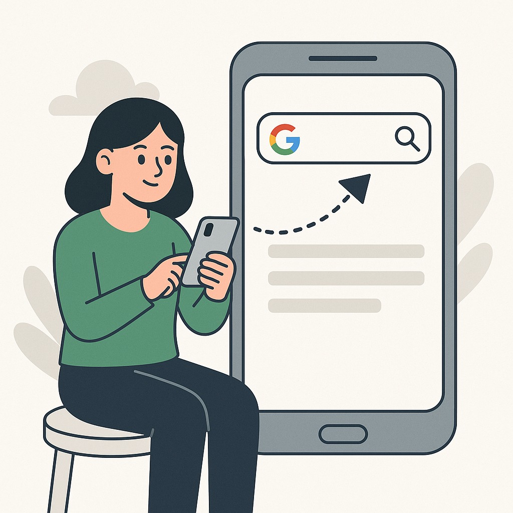

Como Navegar na Internet: Um Guia Rápido para Iniciantes
Passo a passo para abrir o Google e pesquisar:
1️- No aparelho celular, localize o Ãcone do navegador (geralmente nomeado como “Navegador”, “Internet†ou “Chrome”).
2️- Toque no Ãcone para abrir o navegador.
3️- Na parte superior da tela, surgirá uma barra de pesquisa. Toque sobre ela e digite o que deseja buscar, como por exemplo: “remédio para dor de cabeça”.
4️- Em seguida, toque no botão de pesquisa (representado por uma lupa🔠ou pela tecla “Ir†no teclado).
5- Uma lista de sites relacionados ao que foi digitado será exibida. Toque no site desejado para acessá-lo.
Pronto! Agora é só escolher o site que você quer abrir com o dedo.